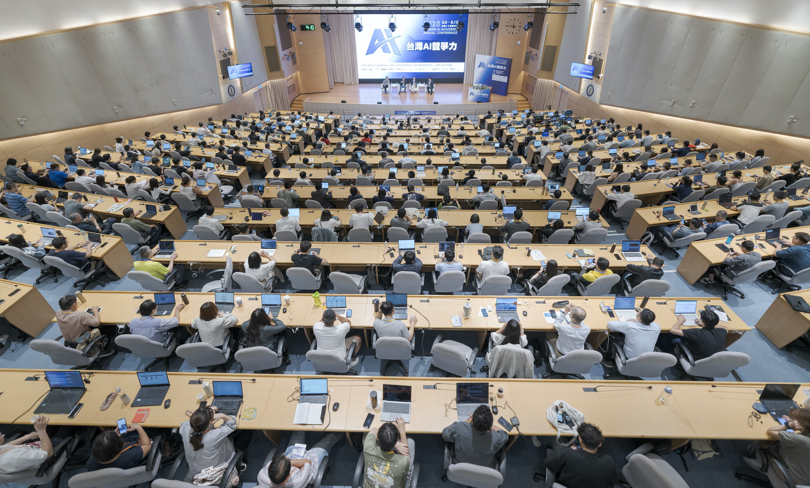

「AI 不只是技術革新，更是企業治理的新挑戰」
「2026 董監事 AI 大講堂」由財團法人台灣人工智慧學校基金會主辦，旨在協助台灣產業高階決策者掌握 AI 治理新標準與經濟動能。透過系統化的議程，從法規合規、資安防禦、總體經濟影響，到生成式 AI 的商業模式再造，為企業領導層提供全方位的 AI 轉型藍圖。
本課程提供董監進修時數認證，協助企業領導人在 AI 時代建立完整的治理框架，掌握 AI 帶來的風險與機遇，引領企業穩健前行。
* 數據統計自台灣人工智慧學校歷屆課程

匯聚產官學研頂尖專家，為企業決策者提供最前瞻的 AI 戰略視野。

台灣人工智慧學校 執行長
中央研究院資訊服務處處長

中華經濟研究院 院長
政大財政學系 特聘教授

清華大學科技管理學院
兼任教授

臺灣大學管理學院 副院長
EiMBA 執行長
課程總結

台灣人工智慧學校 校務長

董監事/公司治理主管進修時數認證及
台灣人工智慧學校完課證書
全程參與者，將頒發完課證書，供您向證交所或櫃買中心申報（需完成簽到退）。
5F 萬豪廳
台北市中山區樂群二路199號
捷運劍南路站 3 號出口，左轉植福路，至敬業四路交叉口右轉，直行敬業四路 250 公尺
萬豪酒店提供特惠方案給 4/27 有住房需求學員，請洽酒店
每人 6,600 元含稅 (提供午餐與茶點)
企業團體及治理夥伴贊助方案
請洽詢台灣人工智慧學校
02-8512-3731 分機 12 康小姐
baoyun.kang@aiacademy.tw